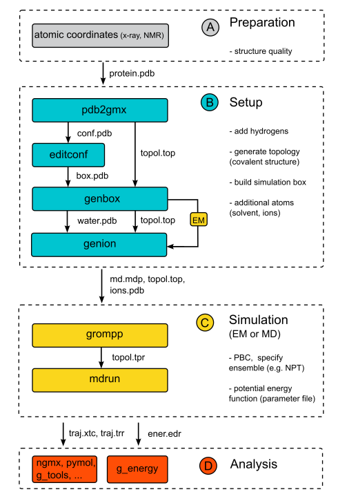

Practical 2: Introduction to protein simulation

In the previous part we've learned what MD simulations are and how to simulate a van der Waals gas. Now it is time to set up a simulation of a biological
macromolecule: a small protein.
Proteins are nature's universal machines. For example, they are used as building blocks (e.g. collagen in skin, bones and teeth), transporters (e.g. hemoglobin as oxygen transporter in the blood), as reaction catalysts (enzymes like lysozyme that catalyse the breakdown of
sugars), and as nano-machines (like myosin that is at the basis of muscle contraction). The protein's structure or molecular architecture is sufficient
for some of these functions (like for example in the case of collagen), but for most others the function is intimately linked to internal dynamics. In these
cases, evolution has optimised and fine-tuned the protein to exhibit exactly that type of dynamics that is essential for its function. Therefore, if we want
to understand protein function, we often first need to understand its
dynamics (see references below).
Unfortunately, there are no experimental techniques available to study protein dynamics at the atomic resolution at the physiologically
relevant time resolution (that can range from seconds or milliseconds down to nanoseconds or even picoseconds). Therefore, computer simulations are
employed to numerically simulate protein dynamics.
As before, we will use the GROMACS simulation package for this.
Today, we will simulate the dynamics of a small, typical protein domain: the B1 domain of protein G. B1 is one of the domains
of protein G, a member of an important class of proteins, which form IgG binding receptors on the surface of certain Staphylococcal and
Streptococcal strains. These proteins allow the pathogenic bacterium to evade the host immune response by coating the invading bacteria
with host antibodies, thereby contributing significantly to the pathogenicity
of these bacteria.
We will now follow a standard protocol to run a typical MD simulation of a
protein in a box of water in gromacs. The individual steps are summarized in a flowchart on the right site.

A. Preparation
Before a simulation can be started, an initial structure of the protein is required. Fortunately, the structure of the B1 domain of
protein G has been solved experimentally, both by x-ray crystallography and NMR. Experimentally solved protein structures are
collected and distributed by the Protein Data Bank (PDB). Please open
this link in a new browser
window and enter "protein G B1" in the search field. Several entries
in the PDB should match this query. We will choose the x-ray structure
with the highest resolution (entry 1PGB) for this study. To download
the structure, click on the link "1PGB", and then, under "Download Files",
select "PDB File". When prompted, select "save to disk", and save the file
to the local hard disk. To have a look at the contents of the file, on the unix prompt, type:
more 1PGB.pdb
As we'll learn in the next practical on protein structure, the file starts with general information about the protein, about the
structure, and about the experimental techniques used to determine the
structure, as well as literature references where the structure is described
in detail. (in "more", press the spacebar to scroll). The data file contains the atomic coordinates of our protein structure with one line per atom. (quit the "more" program by pressing "q").
Now we can have a look at the structure:
pymol 1PGB.pdb
to visualise the structure.
We now see a so-called wireframe
representation of the protein structure: atoms (with different colors
for the different chemical elements: green for carbon; red for oxygen
and blue for nitrogen) are not shown directly, but the
bonds between atoms are shown as lines. Under the "Show" and "Hide" menus ("S" and "H" at the top-right of the "PyMOL Viewer" window), also try
other representations such as "sticks", "spheres", "cartoon"
and "surface". Try different views by moving the mouse over the molecule viewer with the left mouse button pressed, and zoom with the right mouse button pressed. Exit pymol.
Question: Why do we start our MD
simulations from the experimental determined 3D structure? Isn't it enough to know the proteins amino acid sequence?
Go back to Contents
B. Setup
We will now prepare the protein structure to be simulated in gromacs. Although we now have a starting structure for our protein, one might
have noticed that hydrogen atoms (which would appear white) are still missing from the
structure. This is because hydrogen atoms contain too few electrons to
be observed by x-ray crystallography at moderate resolutions. Also,
gromacs requires a molecular description (or topology) of the
molecules to be simulated before we can start, containing information
on e.g. which atoms are covalently bonded and other physical information. Both the generation of
hydrogen atoms and writing of the topology can be done with the
gromacs program pdb2gmx:
gmx pdb2gmx -f 1PGB.pdb -o conf.pdb
when prompted for the force-field and water model to be used, choose the number corresponding to the OPLS-AA/L all-atom force field and to the SPC water model. View the result with:
pymol conf.pdb
See the added hydrogens (white lines)? The topology file written by pdb2gmx is called "topol.top". Have a
look at the contents of the file using:
more topol.top
you will see a list of all the atoms (with masses, charges), followed
by bonds (covalent bonds connecting the atoms), angles, dihedral
angles etc. Near the very end of the topology (in the "[molecules]"
section) there is a summary of the simulation system, including the
protein and 24 crystallographic water molecules.
The topology file thus contains all the physical information about all
interactions between the atoms of the protein (bonds, angles, torsion
angles, Lennard-Jones interactions and electrostatic interactions).
The next step in setting up the simulation system is to solvate the
protein in a water box, to mimick a physiological environment. For that, we first need to define a
simulation box. In this case we will generate a rectangular box with
the box-edges at least 7 Angstroms apart from the protein surface:
gmx editconf -f conf.pdb -o box.pdb -d 0.7
(note that gromacs uses units of nanometers). View the result
with
pymol box.pdb
and, in pymol, type:
show cell
Now we fill the simulation box with SPC water using genbox:
gmx solvate -cp box.pdb -cs spc216 -o water.pdb -p topol.top
Again, view the output (water.pdb) with pymol. Now the simulation
system is almost ready. Before we can start the dynamics, we must
perform an energy minimisation, to alleviate any bad contacts (atoms
overlapping such that a significant repulsion would result, causing
numerical problems in the simulation) that
might be present in the system. For this we need a parameter file,
specifying which type of minimisation should be carried out, the
number of steps, etc. For your convenience a file called "em.mdp" has
already been prepared and can be downloaded from here. View the file
with "more" to see its contents. We use the gromacs preprocessor to
prepare our energy minimisation:
gmx grompp -f em.mdp -c water.pdb -p topol.top -o em.tpr -maxwarn 2
This collects all the information from em.mdp, the coordinates from
water.pdb and the topology from topol.top, checks if the contents are
consistent and writes a unified output file: em.tpr, which will be
used to carry out the minimisation:
gmx mdrun -v -s em.tpr -c em.pdb
The output shows that already the initial energy was rather low, so
in this case there were hardly any bad contacts. Having a look at
"em.pdb" shows that the structure hardly changed during
minimisation.
The careful user may have noticed that grompp gave a warning NOTE:
System has non-zero total charge: -4.
Before we continue with the dynamics, we should neutralise
this net charge of the simulation system. This
is to prevent artefacts that would arise as a side effect caused by
the periodic boundary conditions used in the simulation. A net charge
would result in an electrostatic repulsion between neighbouring
periodic images. Therefore, 4 sodium ions will be added to the system:
gmx genion -s em.tpr -o ions.pdb -np 4
Select the number corresponding to the water group (SOL) from which 4 water molecules
will be replaced by sodium ions.
The output (ions.pdb) can be checked with pymol. To better see the
ions, type (in pymol):
show spheres, resn na
Since we now changed the topology of the system (4 water molecules
were replaced by sodium ions), we have to manually adapt the topology. Open the topology with your favourite text editor (vi, emacs or gedit)
gedit topol.top
browse towards the end of the file, and change the number of SOL
(water) molecules (from 24 to 20). Then, add a line with "NA 4",
(note the space between "NA" and "4") and do a "save" (twice!) followed by
"quit".
Go back to Contents
C. Simulation
Just to be on the safe side, we repeat the energy minimisation, now with the ions included
(remember to (re)run grompp to create a new run input file whenever
changes to the topology, or coordinates have been made):
gmx grompp -f em.mdp -c ions.pdb -p topol.top -o em.tpr -maxwarn 2
gmx mdrun -v -s em.tpr -c em.pdb
Now we have all that is required to start the dynamics. Again, a
parameter file has been prepared for the simulation, and can be
downloaded here. Please browse
through the file "md.mdp" (using "more") to get an idea of the
simulation parameters. The gromacs online manual describes all
parameters in detail here.
Please don't worry in this stage about all individual parameters,
we've chosen common values typical for protein simulations.
Again, we use the gromacs preprocessor to prepare the simulation:
gmx grompp -f md.mdp -c em.pdb -p topol.top -o md.tpr -maxwarn 2
and start the simulation!
gmx mdrun -v -s md.tpr -c md.pdb -nice 0
The simulation is running now, and depending on the speed and load of
the computer, the simulation will run for a number of minutes.
Question: How do the parts of energy
minimization and MD simulation differ (with reference to energy landscapes)?
Go back to Contents
D. Analysis of a gromacs simulation
The simulation is running now (or finished) and we can start analysing
the results. Let us first see which kind of files have been written by
the simulation (mdrun):
ls -lrt
We see the following files:
- traj_comp.xtc - the trajectory (coordinates) to be used for analyses
- traj.trr - coordinates, velocities and forces written at less frequency.
- state.cpt - a state of the trajectory to be used for a restart in case of a crash
- ener.edr - energies
- md.log - a LOG file of mdrun
- md.gro - the final coordinates of the simulation
The first analysis step during or after a simulation is usually a
visual inspection of the trajectory. For this we will use pymol. First, we load the initial configuration:
pymol md.pdb
then, we load the trajectory by typing on the pymol prompt:
load traj_comp.xtc, md
Play the animation by pressing the play button.
We can see that the protein and its surroundings undergo thermal
fluctuations, but overall, the protein structure is rather stable, as
would be expected on such timescales. To change the view orientation, move the mouse over the molecule, with either the left or right mouse buttons pressed.
If you wish to visualize only the protein (in cartoon representation), on the pymol prompt, type:
hide all
dss
show cartoon
Play the animation by pressing the play button. Close pymol
For a more quantitative analysis
on the protein fluctuations, we can view how fast and how far the
protein deviates from the starting (experimental) structure:
gmx rms -s md.tpr -f traj_comp.xtc
When prompted for groups to be analysed, type "1 1". gmx rms has
written a file called "rmsd.xvg", which can be viewed with:
xmgrace rmsd.xvg
We see the Root Mean Square Deviation (rmsd) from the starting
structure, averaged over all protein atoms, as a function of time.
Question: Why is there an intial rise in the rmsd?
If we now wish to see if the fluctuations are equally distributed over the
protein, or if some residues are more flexible than others, we can
type:
gmx rmsf -s md.tpr -f traj_comp.xtc -oq
Select group "3" (Backbone). The result can be viewed with:
xmgrace rmsf.xvg
We can see that mainly four regions in the protein show a large
flexibility: around residues 1, 11, 21 and 38. To see where these
residues are located in the protein, type:
pymol bfac.pdb
On the pymol prompt type:
hide all
show spheres
spectrum b
The protein backbone is now
shown with the flexibility encoded in the colour. The red (orange,
green) regions are relatively flexible and the blue regions are
relatively rigid. It can be seen that the alpha-helix and beta-sheet
are relatively stable, whereas the loops are more flexible.
The simulation not only yields information on the structural
properties of the simulation, but also on the energetics. With the
program energy the energies written by mdrun can be analysed:
gmx energy -f ener.edr
Select "Potential" and end your selection by pressing enter twice, View the result with:
xmgrace energy.xvg
As can be seen, the total potential energy initially rises rapidly after
which it relaxes again.
Question: Can you think of an explanation for
this behaviour?
Please repeat the energy analysis for a number of different energy
terms to obtain an impression of their behaviour.
Question: Do you think the length of our
simulation is sufficient to provide a faithful picture of the protein's
conformations at equillibrium.
We continue with a number of more specific analysis, the first of
which is an analysis of the secondary structure (alpha-helix,
beta-sheet) of the protein during the simulation.
First, we need to tell gromacs where the DSSP program for secondary structure
calculations can be found:
export DSSP="/usr/bin/dssp"
(or, if you get a message "export: Command not found.", you're perhaps using a
(t)csh in which case the command should be:)
setenv DSSP /usr/bin/dssp
Now, perform the actual analysis with:
gmx do_dssp -s md.tpr -f traj_comp.xtc
select group "1" (protein), and convert the output to PostScript with:
gmx xpm2ps -f ss.xpm
and view the result with:
gv plot.eps
if "gv" is not installed on your computer, try "xpsview", "ghostview"
or "gs". As can be seen, the secondary structure is rather stable
during the simulation, which is an important validation check of the
simulation procedure (and force-field) used.
The next thing to analyse
is the change in the overall size (or gyration radius) of the protein:
gmx gyrate -s md.tpr -f traj_comp.xtc
(again, select group "1" for the protein)
xmgrace gyrate.xvg
The analysis shows that the gyration radius fluctuates around a stable
value and does not show any significant drift. Another important check
concerns the behaviour of the protein surface:
gmx sasa -s md.tpr -f traj_comp.xtc
(again, select group "1" for surface calculation and group "1" for output)
Now view the total solvent accessible surface area with:
xmgrace -nxy area.xvg
Question: Is the total
(solvent-accessible) surface constant? Are any hydrophobic groups
exposed during the simulation?
Go back to Contents
Optional exercises
- You've probably noticed that in the simulation about only ten percent of the
system that was simulated consisted of protein, the rest was water. As we are
mainly interested in the protein's motions and not so much in the surrounding
water, one could ask if we couldn't forget about the water and rather simulate
the protein. That way, we could reach ten times longer simulations with the
same computational effort!
Question: Why do you think that it is
important to include explicit solvent in the simulation of a protein?
To check if your assumption is correct, repeat the simulation of protein G,
this time without solvent (to observe the effect more clearly, increase the
length of the simulation by changing "nsteps" in the file "md.mdp" by e.g. a
factor of ten).
Question: What are the main differences to the
protein's structure and dynamics as compared to the solvent simulation?
(Hint: use programs like gmx rms and gmx gyrate to analyse both simulations).
- Let's go back to the first step in setting up the system - as we already
know, building the topology of our protein can be done with the gromacs program pdb2gmx:
gmx pdb2gmx -f 1PGB.pdb -o conf_gromos.pdb
when prompted for the force-field to be used, now choose the GROMOS 43a1 instead of OPLS-AA/L. Use the more and pymol
commands as before to compare the result with the previous configuration
- what difference do you find?
Question: How is the level of representation correlated with system size (number of atoms)?
Go back to Contents
Further references:
Principles of protein structure and basic in biophysics and biochemistry:
- Stryer, Biochemistry
- Voet, Fundamentals of Biochemistry Rev. Ed.
- Cantor and Schimmel, Biophysical Chemistry Part I: The conformation of biological macromolecules
Computer simulations and molecular dynamics:
- M. Karplus and A. McCammon. Molecular Dynamics simulations of
biomolecules Nature structural biology 9: 646-652 (2002).[link]
- D.C. Rapaport. The Art of Molecular Dynamics Simulations - 2nd edn
Cambridge University Press (2004).
Advanced reading:
- H. Scheraga, M. Khalili and A. Liwo. Protein-Folding Dynamics:
Overview of Molecular Simulation Techniques Annual Review of Physical Chemistry 58: 57-83 (2007).[link]
- K Henzler-Wildman and D Kern. Dynamic personalities of proteins Nature 450: 964-972 (2007).
- K A Sharp and B Honig. Electrostatic Interactions in Macromolecules: Theory and Applications, Annual Review of Biophysics and Biophysical Chemistry 19: 301-332 (1990).
- F M Richards. Areas, Volumes, Packing, and Protein Structure Annual Review of Biophysics and Bioengineering 6: 151-176 (1977).
- K A Dill, S B Ozkan, M Scott Shell and T R Weikl. The Protein Folding Problem Annual Review of Biophysics 37: 289-316 (2008).
Go back to Contents
For questions or feedback please contact Bert de Groot / bgroot@gwdg.de